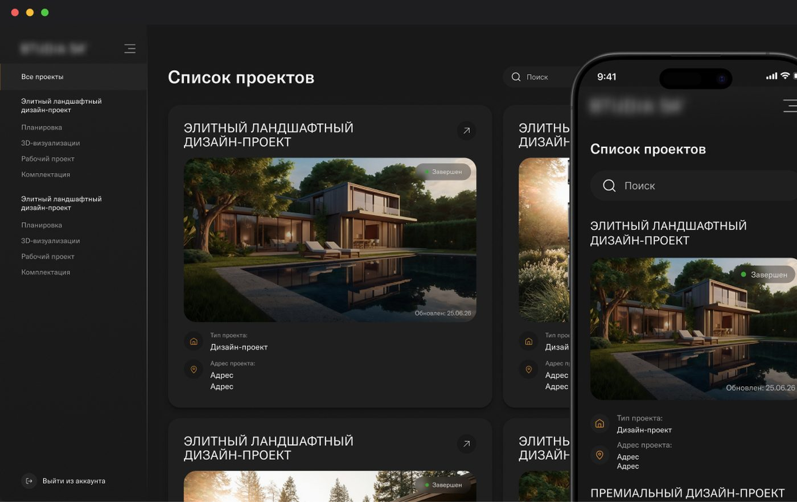

Ссылки
Вводные
Разработка личного кабинета для клиентов архитектурно-дизайнерского бюро. Система должна была объединить всю информацию по проектам в одном пространстве: статус, документацию, рабочие материалы и визуализации.
Отвечала за пользовательские сценарии, информационную архитектуру, структуру личного кабинета, навигацию, прототипирование и UI-дизайн.
Проблема
Информация по проекту была распределена между разными каналами коммуникации. Клиенту было сложно быстро понять текущий статус проекта, найти актуальные документы и вернуться к материалам завершённых проектов.
Цель
Создать единое пространство, в котором клиент может самостоятельно:
- просматривать проекты и их статус;
- находить актуальную документацию;
- работать с техническими материалами;
- просматривать визуализации по помещениям и зонам.
Решение
Основной сущностью системы сделала проект — вокруг него выстроила всю структуру кабинета:
Проекты → Проект → Обзор / Документация / Рабочий проект / Визуализации
Для авторизации предусмотрен закрытый доступ: клиент получает приглашение и активирует свой аккаунт, а не регистрируется самостоятельно.
Внутри проекта предусмотрела:
- статус и этап проекта;
- дату последнего обновления;
- отображение только последней согласованной версии документов;
- отдельный раздел рабочих материалов, спецификаций и планов;
- визуализации, структурированные по помещениям и зонам;
- удобную навигацию между помещениями.
Отдельно проработала состояния системы: пустые состояния, отсутствие документов или визуализаций, ошибки доступа, обновления и уведомления о новых материалах.
Результат
Получился цельный клиентский кабинет, который переводит коммуникацию вокруг проекта из разрозненных каналов в понятный самостоятельный сценарий: зайти → выбрать проект → понять текущий статус → найти нужный материал → посмотреть результат.